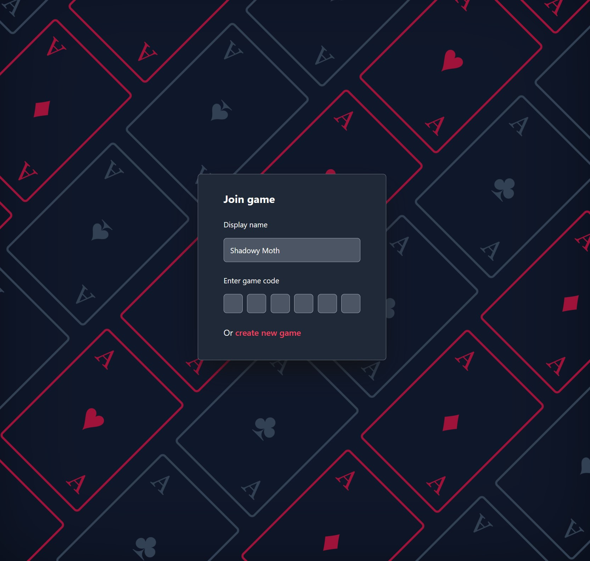

Current project
TypeRacing.io
A simple typing game where you race to finish a given phrase.
Past projects
Factory game era 3
I came back to the factory game once again. I mostly continued from where I left off. I created a new Unity project, but reused the core package. I mainly worked on setting up peer to peer networking, and ended up with a decently compelling system. After 4-5 months though, I got tired and wanted to make a small project again.
Aces
An online version of a card game my family plays a lot, called Aces. The gist is that you're trying to make sets of 3+ cards, and get all cards in your hand into some set. Has an entirely serverless back-end, which was a nightmare to get websockets working for.

Zombie defense typing game
A game that has been on my backlog for a long time, and still is, where making progress on the phrase causes survivors to fire their weapons. Tried using synty assets so I could focus on the game play, but ultimately didn't enjoy this strategy as much.
Solitary Keep
After spending a long time on the factory game, I wanted to make a small project, using the code I had already written for it. Without too much extension I could make a tower defense game, so I started on that. Didn't finish though :/
Factory game era 2
After a while on the zombie defense typing game, I continued with the facotry game with a rebuild. The goal was to spend less of the development cycle in unity, and more in the editor. To do that, most of the game logic would live in a package with unit tests, that gets imported into the Unity project. This was actually a great idea, though I abandoned the project eventually.
Fly by Night
A remake of the first game I finished, which was a fancier version of the helicopter flash game.
Factory game era 1
Pivoted my mobile hex grid tower defense game into a factory game, for some reason. Had a cool landscape, but the dev cycle was a nightmare. Having complex logic live in Unity was so slow to debug with the only way to test being through playing the game.
Hex grid tower defense game
A game where you conquest across a landscape, as a tower defense game. The building you're defending is a trebuchet that's seiging the enemy fortefications. Had a lot of fun building the map. Struggled quite a bit making the game fun though.